de_ungarn (unreleased) for Counter-Strike by Henning Horstmann
de_ungarn (unreleased) for Counter-Strike by Henning Horstmann

co_kraken (unreleased) for Natural Selection by Andrew Jones
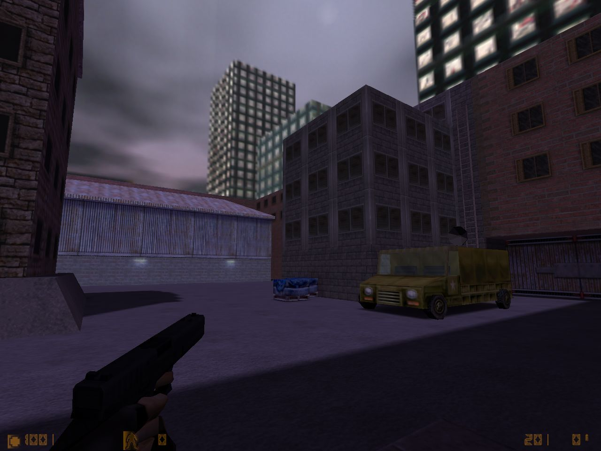
cs_assault for Counter-Strike by Lari Muuriaisniemi
Counter-Strike Beta 1.1, released 16 years ago - June 27, 1999
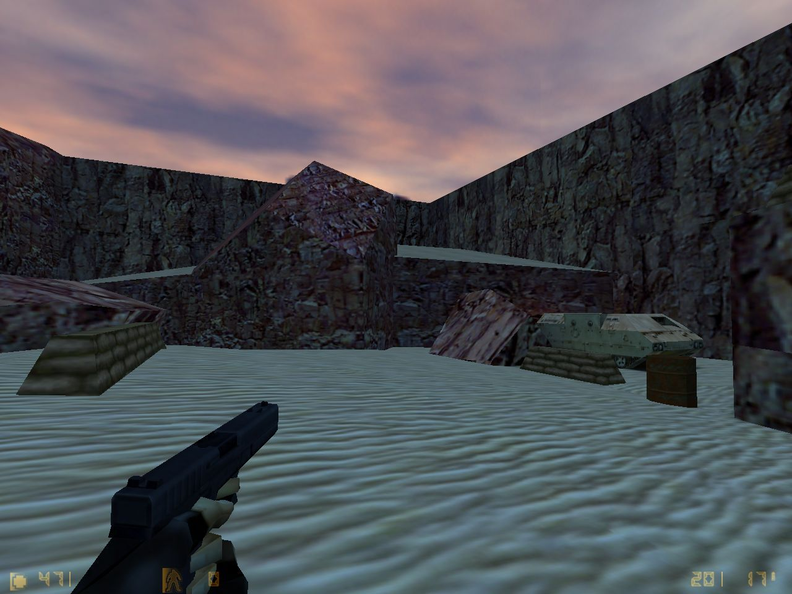
cs_desert for Counter-Strike by Timm Stokke
Counter-Strike Beta 1.1, released 16 years ago - June 27, 1999
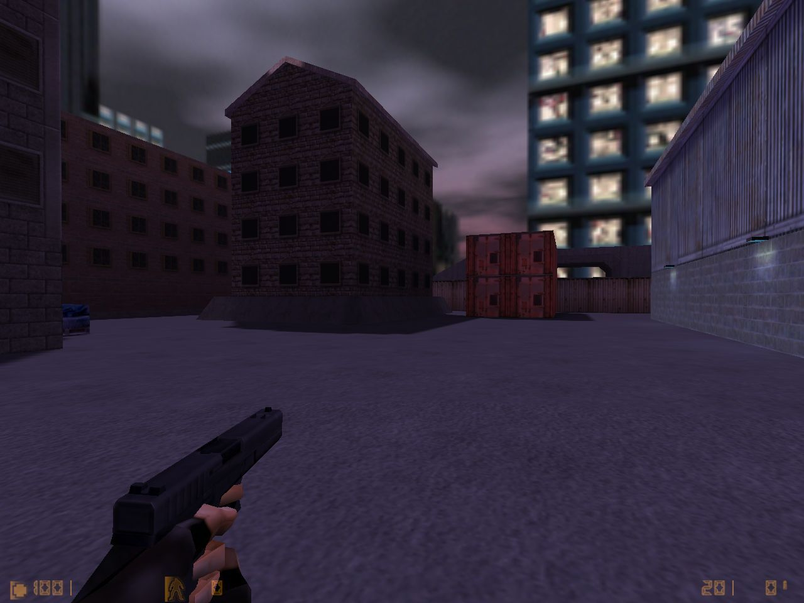
cs_assault for Counter-Strike by Lari Muuriaisniemi
Counter-Strike Beta 1.1, released 16 years ago - June 27, 1999
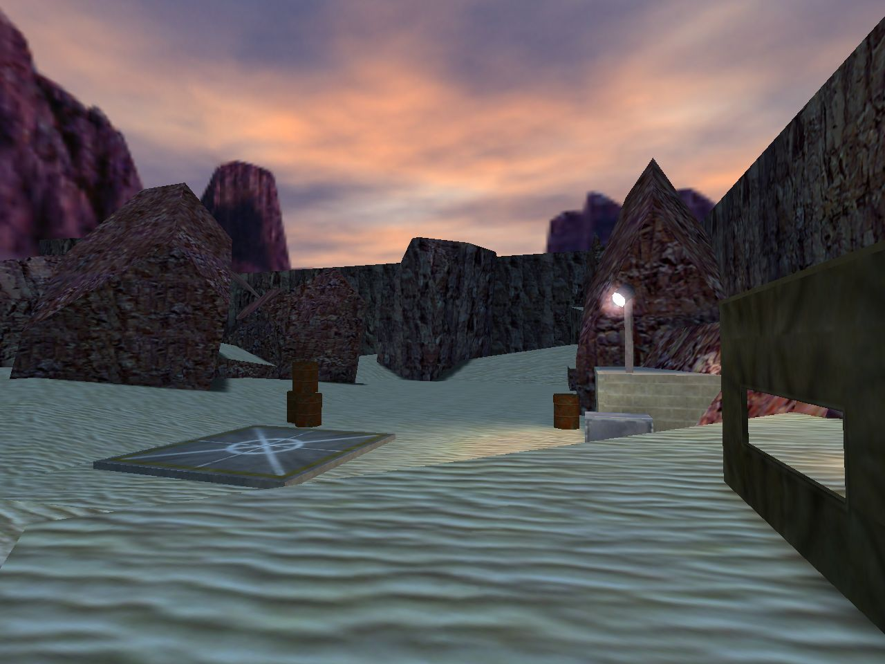
cs_desert for Counter-Strike by Timm Stokke
Counter-Strike Beta 1.1, released 16 years ago - June 27, 1999
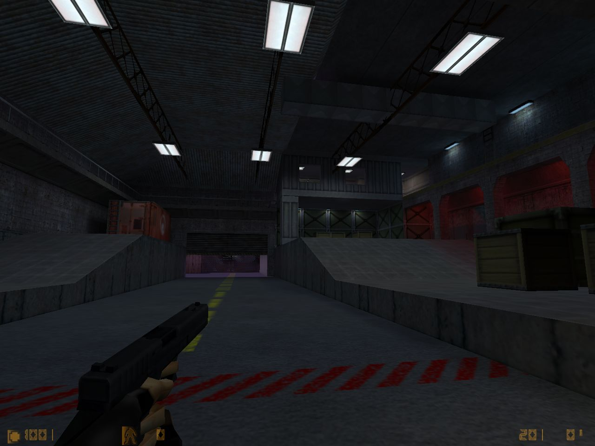
cs_assault for Counter-Strike by Lari Muuriaisniemi
Counter-Strike Beta 1.1, released 16 years ago - June 27, 1999
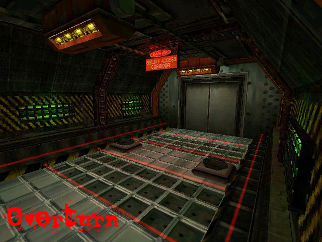
E1M5 - Comms. Bridge for Overturn (upcoming) by IngSoc

Arrangement (upcoming)
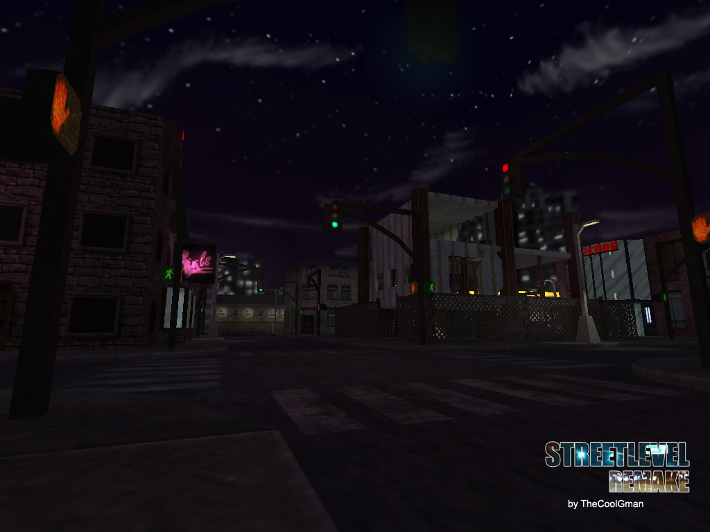
dm_streetlevelremake for Half-Life Deathmatch by Xylemon
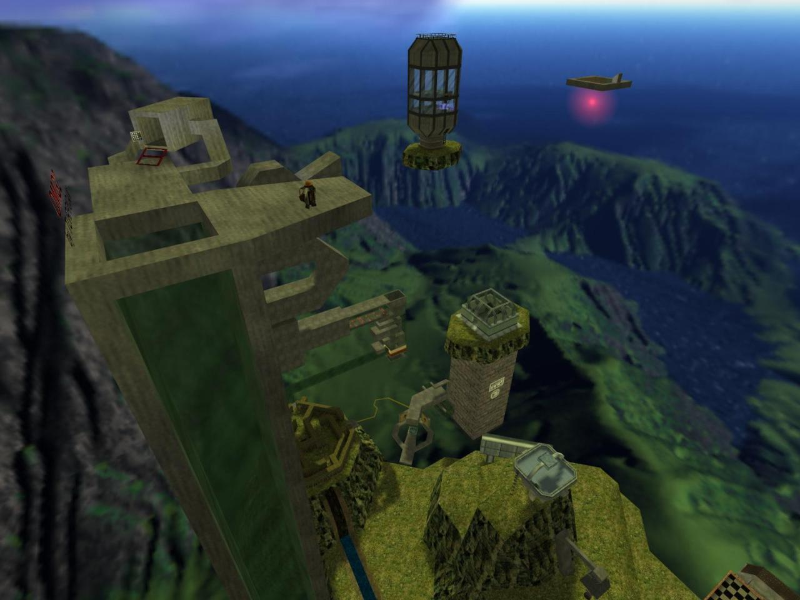
omg2beta2 for Sven Co-op by Turrican

cs_siege for Counter-Strike by Justin DeJong
Counter-Strike Beta 1, released 16 years ago - June 19, 1999
RiP Justin DeJong (n0th1ng)
Its sad to see this map gone forgotten. Was one of the best CS maps.

ua86:
cs_mansion for Counter-Strike by Magnus Lind
Counter-Strike Beta 1, released 16 years ago - June 19, 1999
I love cs_mansion, I’d never seen the beta version before. This stuff is ass hideous.
cs_siege for Counter-Strike by Justin DeJong
Counter-Strike Beta 1, released 16 years ago - June 19, 1999
cs_mansion for Counter-Strike by Magnus Lind
Counter-Strike Beta 1, released 16 years ago - June 19, 1999
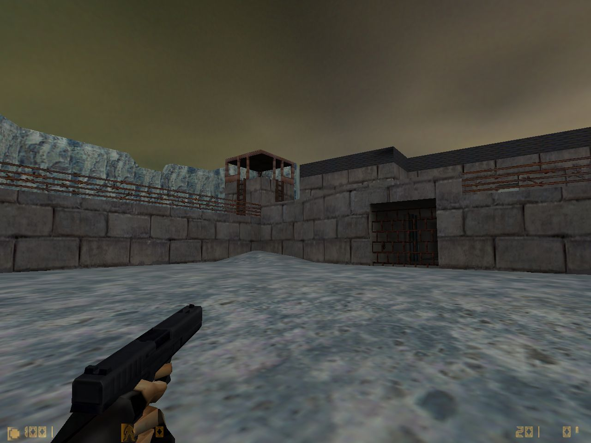
cs_prison for Counter-Strike by Patrik Opacic
Counter-Strike Beta 1, released 16 years ago - June 19, 1999

cs_siege for Counter-Strike by Justin DeJong
Counter-Strike Beta 1, released 16 years ago - June 19, 1999

cs_prison for Counter-Strike by Patrik Opacic
Counter-Strike Beta 1, released 16 years ago - June 19, 1999

cs_mansion for Counter-Strike by Magnus Lind
Counter-Strike Beta 1, released 16 years ago - June 19, 1999
cs_wpndepot for Counter-Strike by Leon Nieuwoudt
Counter-Strike Beta 1, released 16 years ago - June 19, 1999

cs_prison for Counter-Strike by Patrik Opacic
Counter-Strike Beta 1, released 16 years ago - June 19, 1999

cs_wpndepot for Counter-Strike by Leon Nieuwoudt
Counter-Strike Beta 1, released 16 years ago - June 19, 1999

cs_siege for Counter-Strike by Justin DeJong
Counter-Strike Beta 1, released 16 years ago - June 19, 1999
Kicking off a couple days showing off the CS Beta 1 maps, already 16 years old!

Gunman Chronicles by Rewolf Software
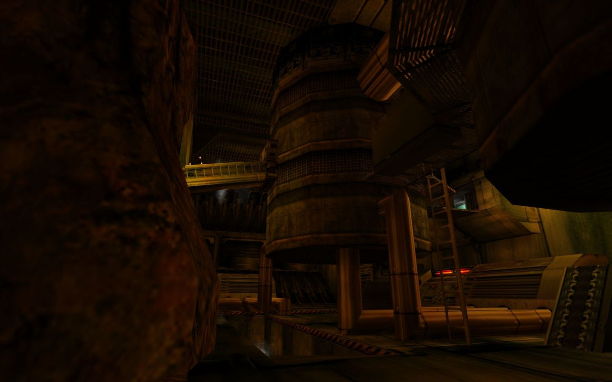
ns_bast for Natural Selection by Kevin Roberts

de_lostworld for Counter-Strike by Benny Kayser

Dustbowl for Team Fortress Classic by Valve


End of the line
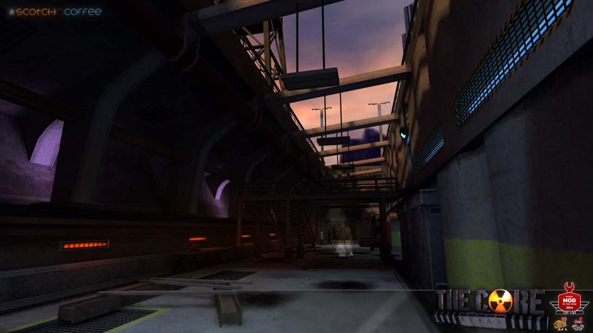
The Core (upcoming) by James Archibald and Andy Morris
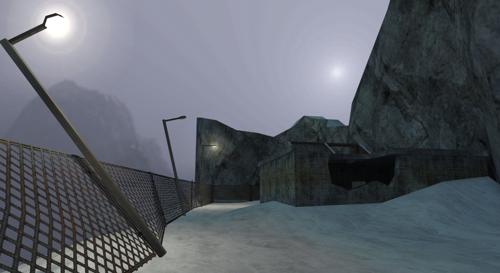
Snowbound for The Wastes by Matti Salminen
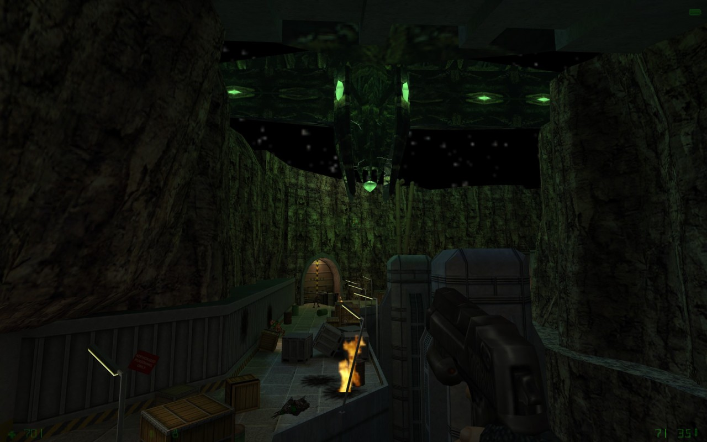
Focalpoint by Dimitri Vujicic
http://www.runthinkshootlive.com/posts/focal-point-half-life/

co_purity (unreleased) for Natural Selection by Oli Hobbs
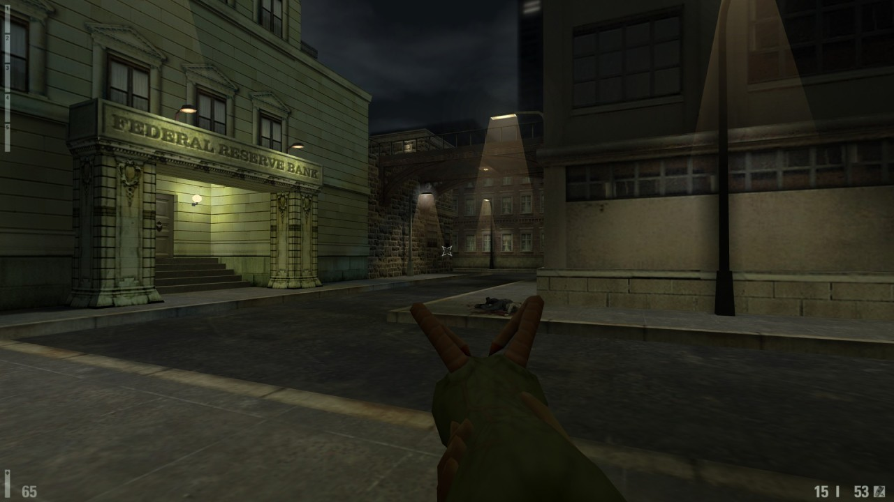
Poke646 by Marc Schroeder

I am the only person in the world playing Ricochet.
NO NO YOU’RE NOT I NEED PEOPLE TO PLAY WITH
Okay, Summer is coming up and we’re confident at LG we could organize some neat events.
There are so many empty servers on Ricochet that we could, on a set date and time hop on and play.
So the question is, would our followers be interested in having some Ricochet meet-ups this summer?
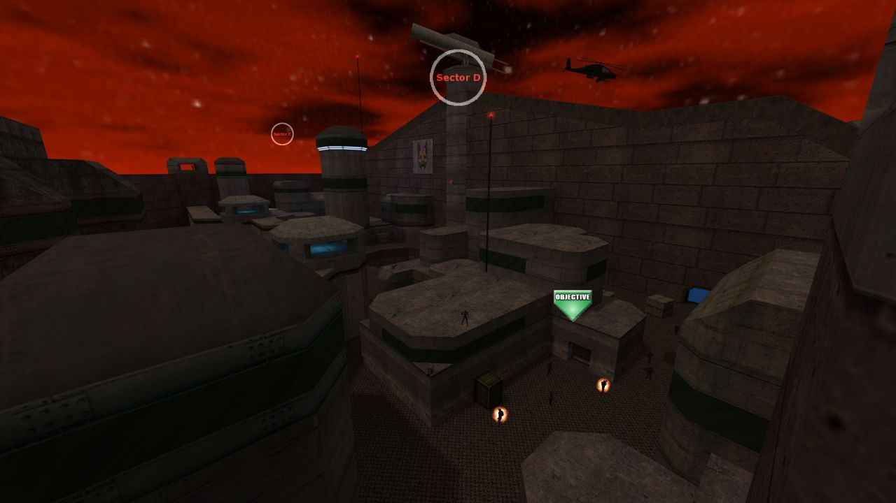
Fortified 1 (upcoming) for Sven Co-op by Nih

Kissmeyer Basic for The Specialists by Morten Hedegren
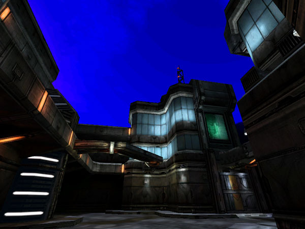
ns_creep (unreleased) for Natural Selection by quazilin

dm_tricoil (unreleased) for Half-Life Deathmatch by Andrew Weldon

Avanti for Team Fortress Classic by Valve
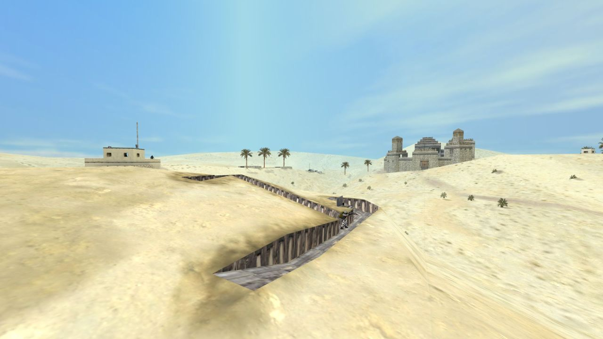
Desert Circle (upcoming) for Sven Co-op by the-middleman
Arena for Ricochet by Valve
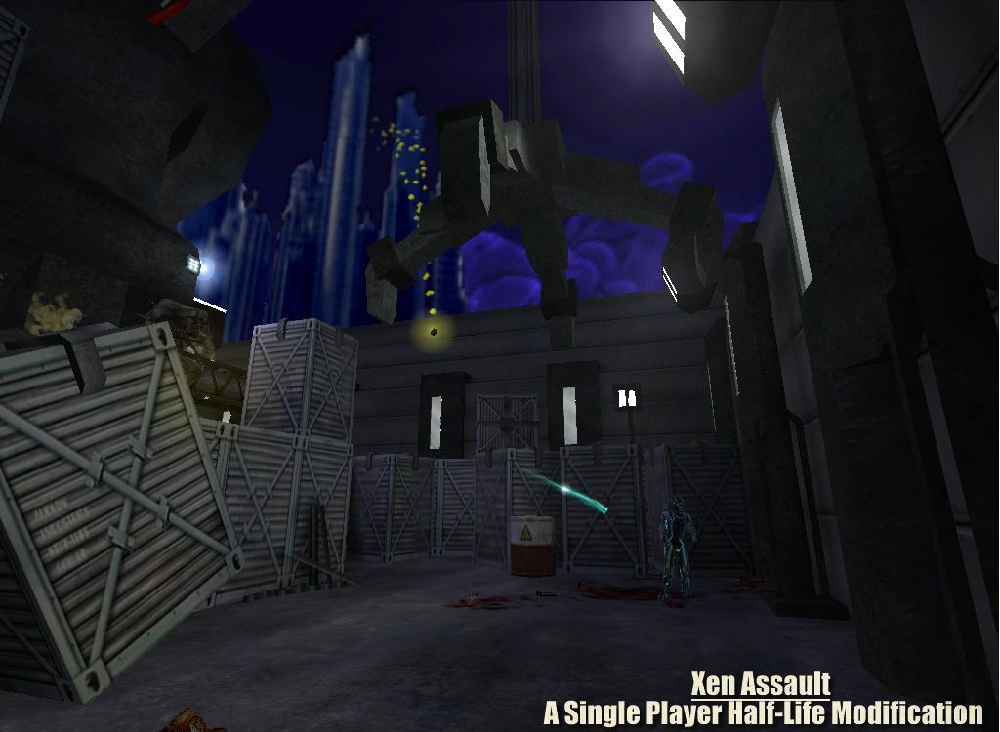
Xen Assault by Nurglew

Awesome Con Week!
From Gunman Chronicles
Red Dawn (unreleased) by Aaron Zimmermann